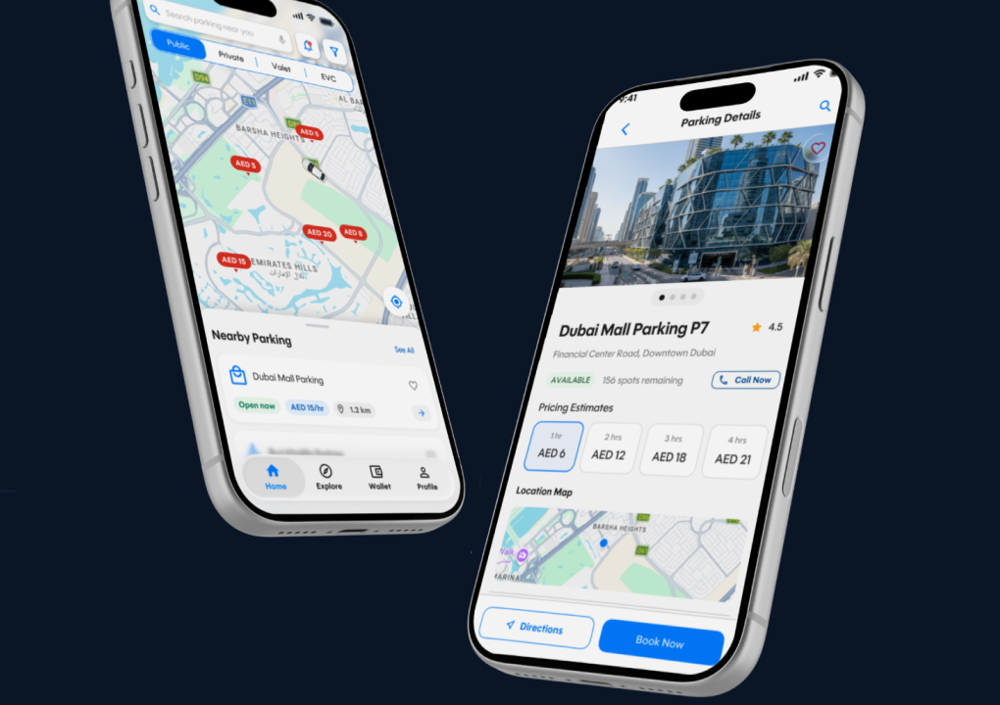
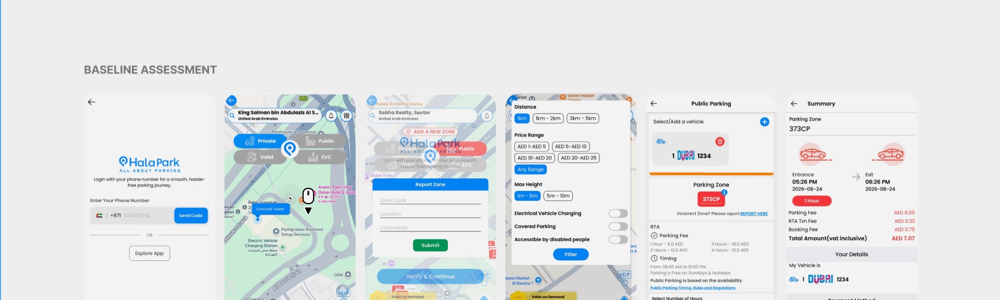
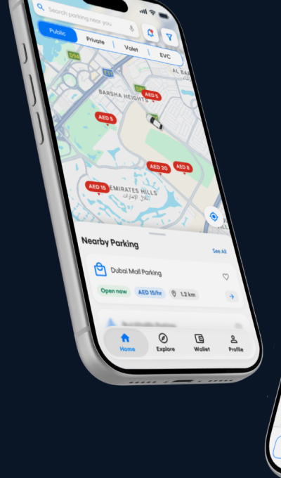
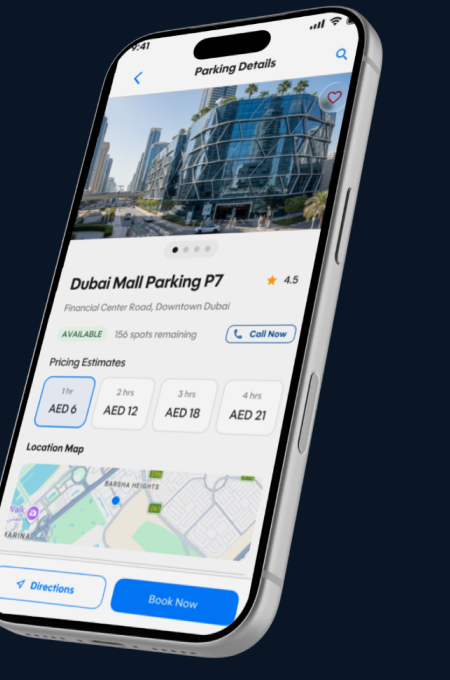
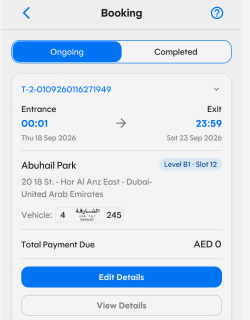
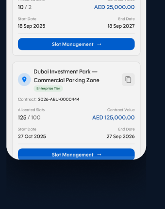

HalaPark 2.0
Redesigning the parking experience from discovery to payment — a mobile experience designed to make finding, booking, and managing parking simpler, clearer, and more predictable.

Parking should be simple — finding and paying shouldn't add stress to driving.
Finding the right parking shouldn't require navigating through a complicated, heavy interface when you're already in a high-stress driving environment. In the baseline product, drivers struggled with competing map overlays and dense interfaces, while the journey from search to payment was fragmented.
Map Pin Clutter
Too much competing information on screen made critical driving actions harder to identify and react to in time.
Competing Visual Layers
Parking metadata, action buttons, and complex map layers competed heavily for limited mobile viewport real estate.
Poor Reachability
Primary action targets lacked sufficient visual priority, making one-handed reachability difficult during transit.
Excess Modal Hops
The path from discovering nearby spots to actively securing a space involved unnecessary modal hops and confirmations.
Pattern Fragmentation
Repeated user actions across discovery, filters, and checkout lacked a predictable, unified visual and behavioral language.
Opaque Pricing & Fees
The transition from selecting a parking zone to reviewing RTA fees and completing payment felt fragmented and intimidating.

4-Step Driver & Operator Workflow
Re-architected around swift cognitive glanceability and zero-friction spot reservation.

Map Discovery & Live Pins
Vector map view highlighting open zones with real-time rate chips (e.g. AED 4/hr) and walking distance radius.

Spot Availability & Details
Clear glanceable breakdown of remaining spots, EV charging bays, covered parking, and progressive hourly pricing.

1-Tap Booking & Live Timer
Instant checkout sheet with saved vehicle profile and interactive post-booking session widget with countdown.

Operator Management Hub
Enterprise dashboard for commercial parking operators displaying sector occupancy, contract values, and slot yields.
From individual screens to a scalable product language.
HalaPark's component architecture was designed around strict modularity — scaling from core foundation tokens into reusable interaction primitives, patterns, and full screens.
#007AFF · labelAccent#FFFFFF · backgroundBase#2A9F47 · semanticSuccessA simpler, more confident parking journey from start to finish.
Simpler Navigation
Cleaner, uncluttered architecture makes the primary journey from map to spot discovery effortless.
Clearer Hierarchy
Important spot information and key driving actions receive stronger visual priority and reachability.
Fewer Cognitive Steps
Booking journey structured around the driver's immediate goal, removing unnecessary intermediate modals.
Consistent UI Language
Predictable component patterns build instant user familiarity and confidence across every interaction.
Scalable Design System
Tokenized design foundation readily supports future commercial and valet product expansion.
"HalaPark 2.0 wasn't just a visual redesign. It was an exercise in simplifying a complex parking journey into a product experience that feels predictable, fast and trustworthy."
— Core Product Takeaway · HalaPark UX Redesign & Design SystemIntelli — Enterprise Design System
Scalable design tokens and multi-tenant banking platforms for tier-1 institutions.